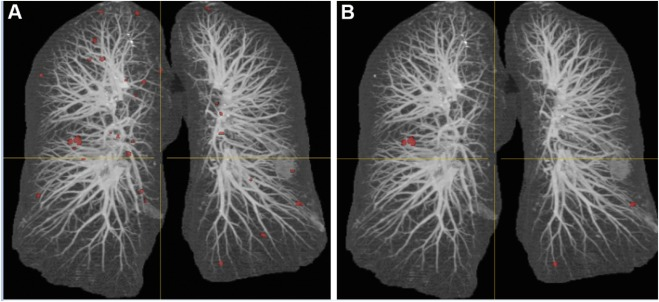
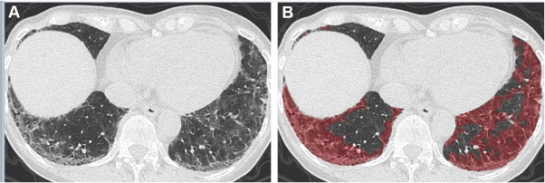

The World Health Organization estimates that two thirds of the global population lack access to imaging and radiology diagnostics . Thoracic imaging techniques such as digital chest radiography have the major advantage to be easy to use and affordable, even in developing or underdeveloped areas. It consists of 2D images and several billions have already been stored on picture archiving and communication systems (PACS) and linked to radiological reports. However, there is a shortage of experts who can interpret chest radiographies, even when imaging equipment is available, which opens tremendous perspectives for the impact of artificial intelligence applied to thoracic imaging. The first application of artificial intelligence is workflow optimization, by detecting CXR with possible abnormalities that should be read first among all CXR of the work list. Using density and texture-based features, Kao et al. developed a CAD system to automatically determine abnormal chest examinations in the work list of radiologists interpreting chest examinations. The turnaround time for reporting abnormal CXR was reduced by 44 % . CAD can be used for specific detection tasks on chest radiograph, such as detection of tuberculosis, pneumonia or lung nodule, and even more advances tasks such as multiple disease detection are being developed as well .
